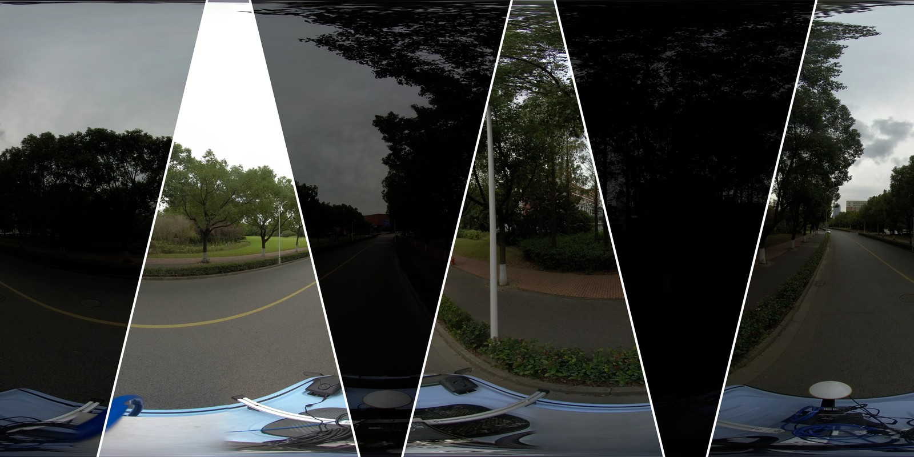
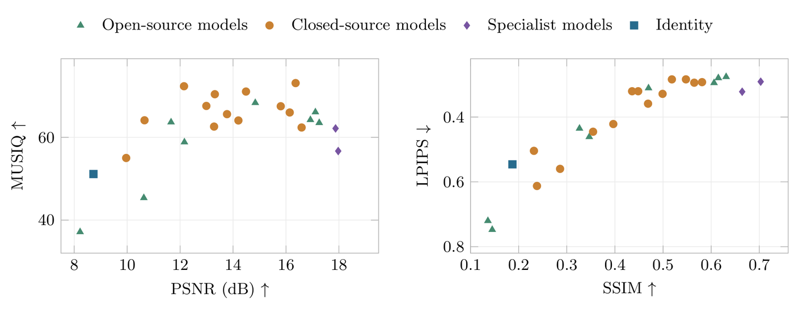

Panoramic
50 paired equirectangular views.
Accepted · IEEE Open Journal on Immersive Displays
OmniLowLight: Benchmarking Generative Low-Light Enhancement Across Image Representations

01 / The benchmark
Generative image editors can brighten a dark photograph. How well do they preserve the reference scene when the image is panoramic, perspective, or fisheye?
OmniLowLight studies captured daytime underexposure using paired dark inputs and well-exposed photographic references. Nighttime low-light photography is outside this benchmark’s scope.
50 paired equirectangular views.
50 paired perspective viewports.
50 paired single-lens fisheye views.
105 source captures · 51 geographic blocks · 21 generative-editor configurations, 2 specialist methods, and an unchanged-input Identity control.
02 / Evaluation
Reference similarity and predicted image quality measure different aspects of enhancement. We evaluate PSNR, SSIM, LPIPS, and MUSIQ on a fixed reference grid, with full-frame scoring and geographic-block bootstrap intervals.

03 / Dataset access
Access is reviewed individually. Dataset files and download details are shared privately with approved applicants.
Open the access-request form ↗Non-commercial academic research only. No redistribution of dataset files, annotations, archived outputs, or access details.
Read dataset access terms ↗Provide your name, institutional email, affiliation, research purpose, and agreement to the terms through Google Forms.
The maintainers review each request. Submission does not automatically grant access. Approved applicants receive instructions privately.
04 / Citation
Please cite the paper and report the dataset version and any preprocessing. Publication identifiers will be added when assigned.
@article{zheng2026omnilowlight,
title = {OmniLowLight: Benchmarking Generative Low-Light
Enhancement Across Image Representations},
author = {Zheng, Yushuo and Jiang, Hao and Fan, Lei and
Ji, Kaiyuan and Sun, Haijiang and Liu, Yide and
Duan, Huiyu and Zhang, Zicheng},
journal = {IEEE Open Journal on Immersive Displays},
note = {Accepted for publication}
}